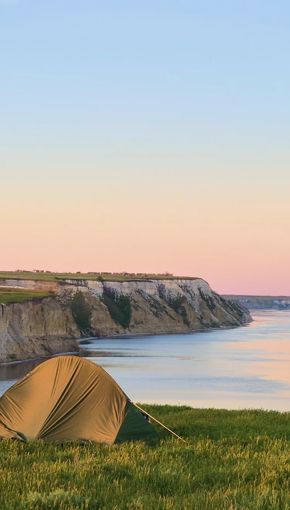
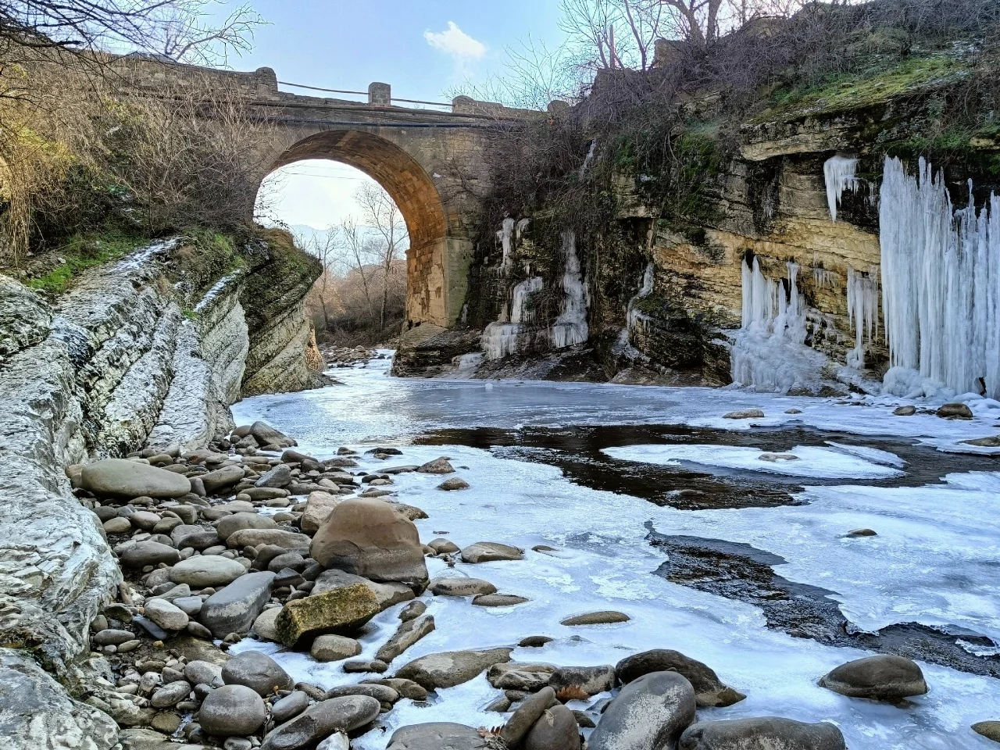
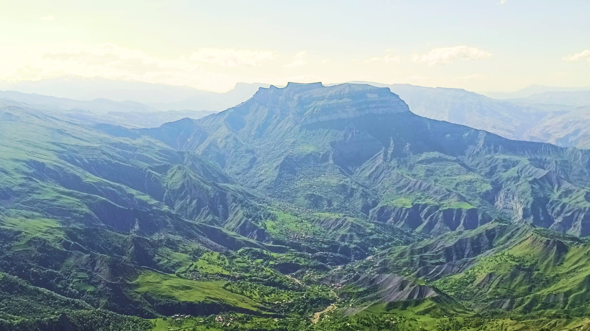
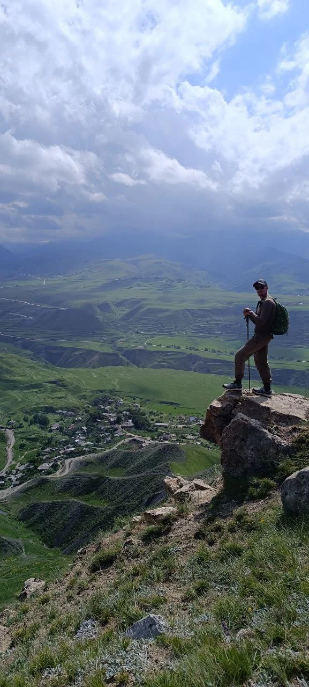
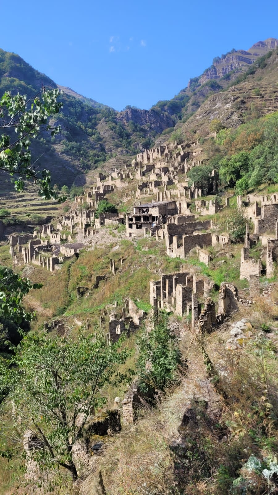

Обо мне
В течении 5 лет я работал над созданием пешего маршрута
Кавказская тропа. Проведя много месяцев в горах, я увидел их
настоящую жизнь. В 2025 был дан старт новому проекту -
пешеходному маршруту Волга Море, проходящему по берегу великой
Русской реки.
Сейчас я хочу показать вам красоту мест, пленившую
моё сердце.
Я провожу походы только в той местности которую
хорошо знаю, и только на легке. Мы не несём на себе палатки и
запас еды.
В походе соблюдаем баланс между дикой природой и
комфортным размещением на ночлег. Добро пожаловать в клуб
любителей красивых пейзажей и легкого рюкзака.
Узнать больше
3500 км
Пешком по горам кавказа
20+
Исследовательских экспедиций
50+
Групп под руководствомs
Записывайся в поход
-

Волга море
Поход проходит по югу Саратовской области, вдоль высокого берега Волги, величайшей реки Европы.
-

Узоры времён
Пеший поход по южному Дагестану с проживанием у местных жителей. Всё включено.
-

Тропа Императора
Пеший поход по центральному Дагестану с проживанием в гостевых домах. Всё включено.
-

Горы мастеров
Нигде больше на Кавказе не сохранилось так много самобытных ремесленных сёл как в регионе проведения похода.
Фото из походов


Гранитный — по затерянному берегу Океана
от 2025 г.

Кольский полуостров, полуостров Рыбачий
от 2025 г.

Дальние Зеленцы — край Земли
от 2025 г.